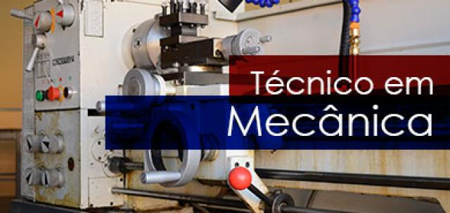

Técnico Administracao:
O Técnico em Administração é o profissional que controla a rotina administrativa das empresas.Colabora nos planejamentos estratégico, tático e operacional. Realiza atividades em recursos humanos e intermedeia mão-de-obra para colocação e para recolocação profissional. Atua na área de compras; auxilia no setor contábil e assessora a área de Vendas. Intercambia mercadorias e serviços e executa atividades nas áreas fiscal e financeira.
Mercado de trabalho:
Áreas da Indústria, Comércio, Prestação de Serviços, em empresas em geral de pequeno e médio portes.
Técnico em Contabilidade:
O Técnico em Contabilidade é o profissional que realiza atividades inerentes à contabilidade em empresas, em órgãos governamentais ou em outras instituições públicas e privadas. Para tanto, constitui e regulariza a empresa, identifica documentos e informações, atende à fiscalização e procede à consultoria empresarial. Executa a contabilidade geral, operacionaliza a contabilidade de custos e efetua contabilidade gerencial. Administra o departamento pessoal e realiza controle patrimonial.
Mercado de trabalho:
Áreas da Indústria, Comércio, Prestação de Serviços, empresas em geral de pequeno e médio portes.
Técnico em Comunicação Visual:
O Técnico em Comunicação Visual é o profissional que executa programação visual de diferentes gêneros e formatos gráficos para peças publicitárias como livros, portais, painéis, fôlderes, jornais. Desenvolve e emprega elementos criativos e estéticos de comunicação visual gráfica. Cria ilustrações; aplica tipografias; desenvolve elementos de identidade visual; aplica e implementa sinalizações. Analisa, interpreta e propõe a produção da identidade visual das peças. Controla, organiza e armazena materiais físicos e digitais da produção gráfica.
Mercado de trabalho:
provedores de Internet, agência de publicidade, editoras, bureau gráficos, escritórios de design e gráficas.
Técnico em Design de Interiores:
O Técnico em Design de Interiores é o profissional que elabora projetos visando à estética e à funcionalidade dos ambientes, ao planejamento do espaço, do revestimento e do acabamento arquitetônico à distribuição e à composição de móveis e projetos de iluminação.
Mercado de trabalho:
escritórios ou empresas de decoração, fábricas de móveis, empresas de arquitetura, de cenografia, de montagem de feiras e exposições.
Técnico em Edificações:
O Técnico em Edificações é o profissional que executa atividades específicas da área de Construção Civil, tais como concepção de projetos, planejamento e orçamento de obras, supervisão da execução de diferentes etapas do processo construtivo, realização do controle tecnológico de materiais e do solo e levantamentos topográficos e planialtimétricos, com senso crítico e analítico, espírito de liderança, capacidade organizacional, visão sistêmica e consciência da responsabilidade social, inerente à sua profissão.
Mercado de trabalho:
empresas de Construção Civil, públicas ou privadas.
Técnico em Eventos:
O Técnico em Eventos é o profissional que auxilia e atua na prospecção, no planejamento, na organização, na coordenação e na execução dos serviços de apoio técnico e logístico de eventos e cerimoniais, utilizando o protocolo e etiqueta formal. Recepciona e promove serviços de eventos. Planeja e participa da confecção de ornamentos decorativos. Coordena o armazenamento e manuseio de gêneros alimentícios servidos em eventos. Realiza procedimentos administrativos e operacionais relativos a eventos.
Eixo Tecnológico: Turismo, Hospitalidade e Lazer.
Mercado de trabalho:
empresas organizadoras de eventos, centro de convenções e de exposições, hotéis, parques temáticos e urbanos, empresas prestadoras de serviços para eventos, órgãos públicos, Convention and Visitors Bureau, cruzeiros marítimos, restaurantes e bufês.
Técnico em Informática:
O Técnico em Informática é o profissional que desenvolve e opera sistemas, aplicações e interfaces gráficas. Monta estruturas de banco de dados e codifica programas. Projeta, implanta e realiza manutenção de sistemas e de aplicações. Seleciona recursos de trabalho, linguagens de programação, ferramentas e metodologias para o desenvolvimento de sistemas.
Mercado de trabalho:
Indústrias em geral, estabelecimentos comerciais, órgãos públicos municipais, estaduais e federais.
Técnico em Logística:
O Técnico em Logística é o profissional que executa os processos de planejamento, operação e controle de programação da produção de bens e serviços, programação de manutenção de máquinas e de equipamentos, de compras, de recebimento, de armazenamento, de movimentação, de expedição e de distribuição de materiais e produtos, utilizando tecnologia de informação.
Mercado de trabalho:
Áreas da Indústria, Comércio e empresas de consultoria.

Técnico em Mecânica:
O técnico em Mecânica é o profissional que elabora projetos mecânicos e sistemas automatizados. Monta e instala máquinas e equipamentos.
Planeja e realiza manutenção. Desenvolve processos de fabricação e montagem de conjuntos mecânicos. Elabora documentação, realiza compras e vendas técnicas e cumpre normas e procedimentos de segurança no trabalho e preservação ambiental.
Mercado de trabalho:
Indústrias, fábricas de máquinas, equipamentos e componentes mecânicos. Laboratórios de controle de qualidade, de manutenção e pesquisa no setor produtivo mecânico; prestadoras de serviços.
Técnico em Recursos Humanos:
O Objetivo do Técnico em Recursos Humanos é desenvolver trabalhos nas áreas de recrutamento e seleção, administração de pessoal, treinamento e desenvolvimento, remuneração e benefícios, envolvendo a elaboração de pareceres técnicos e instruções processuais, o controle e registro das atividades, de acordo com a legislação trabalhista, previdenciária e as normas e regulamentos internos, e efetuar levantamentos e tratamentos técnicos das informações e dados da sua área de atuação.
Mercado de Trabalho:
O técnico em Recursos humanos é um profissional preparado para exercer várias funções dentro do setor de recursos humanos nas mais diversas organizações.

Técnico Desenvolvimento de Sistemas:
O Técnico de Desenvolvimento de Sistemas é o profissional que analisa e projeta sistemas. Constrói, documenta, realiza testes e mantém sistemas de informação. Utiliza ambientes de desenvolvimento e linguagens de programação específica. Modela, implementa e mantém bancos de dados.
Eixo Tecnológico:
Informação e Comunicação.
Mercado de trabalho:
Empresas e departamentos de desenvolvimento de sistemas em organizações governamentais e não governamentais, podendo também atuar como profissional autônomo.
Técnico em Informática para Internet:
O Técnico em Informática para Internet é o profissional que desenvolve e realiza manutenções em websites, portais na Internet e Intranet. Utiliza ferramentas de desenvolvimento de projetos para construir soluções que auxiliam o processo de criação de interfaces e aplicativos empregados no comércio e marketing eletrônicos.
Eixo Tecnológico:
Informação e Comunicação
Mercado de trabalho:
Instituições públicas, privadas e do terceiro setor que demandem programação de computadores para Internet.
Técnico em Segurança do Trabalho:
O Técnico em Segurança do Trabalho é o profissional que atua em ações prevencionistas nos processos produtivos com auxílio de métodos e técnicas de identificação, avaliação e medidas de controle de riscos ambientais, de acordo com a Legislação Brasileira, Normas Regulamentadoras e princípios de Higiene, Saúde e Segurança do Trabalho. Desenvolve ações educativas na área de Saúde e Segurança do Trabalho. Seleciona, controla, orienta e fiscaliza o uso de EPI e EPC. Coleta e organiza informações de saúde e de segurança no trabalho. Avalia e executa diversos programas de prevenção em SST, inclusive PPRA (Programa de Prevenção de Riscos Ambientais). Investiga, analisa acidentes e recomenda medidas de prevenção e controle.
Eixo Tecnológico:
Segurança.
Mercado de trabalho:
Empresas públicas e privadas, como indústrias, hospitais, empresas comerciais, mineradoras, de construção civil e área rural.
Vestibulinho Etec